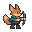
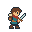
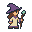
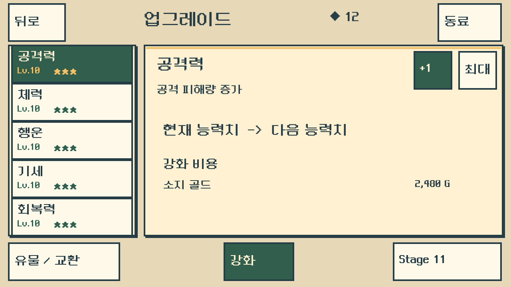
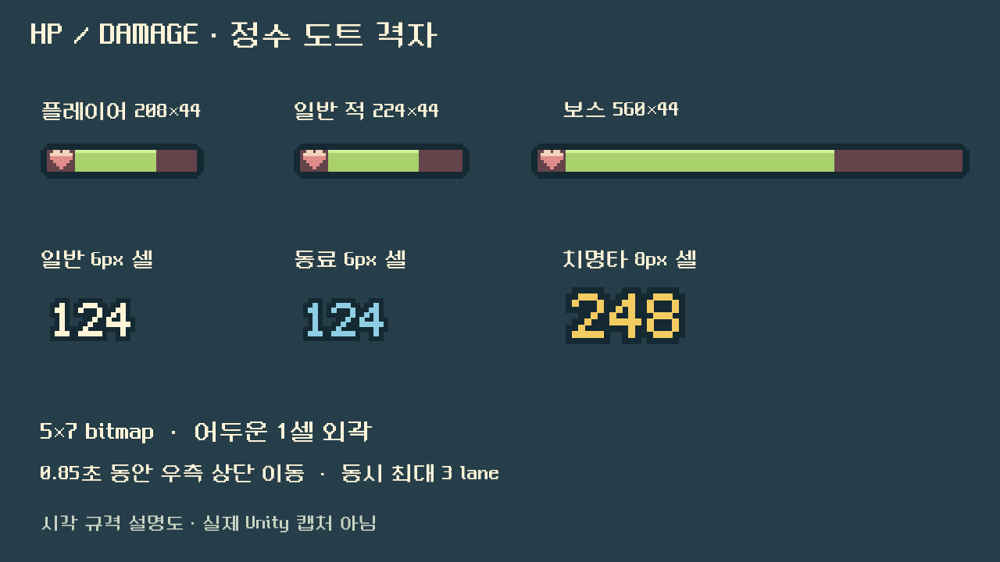
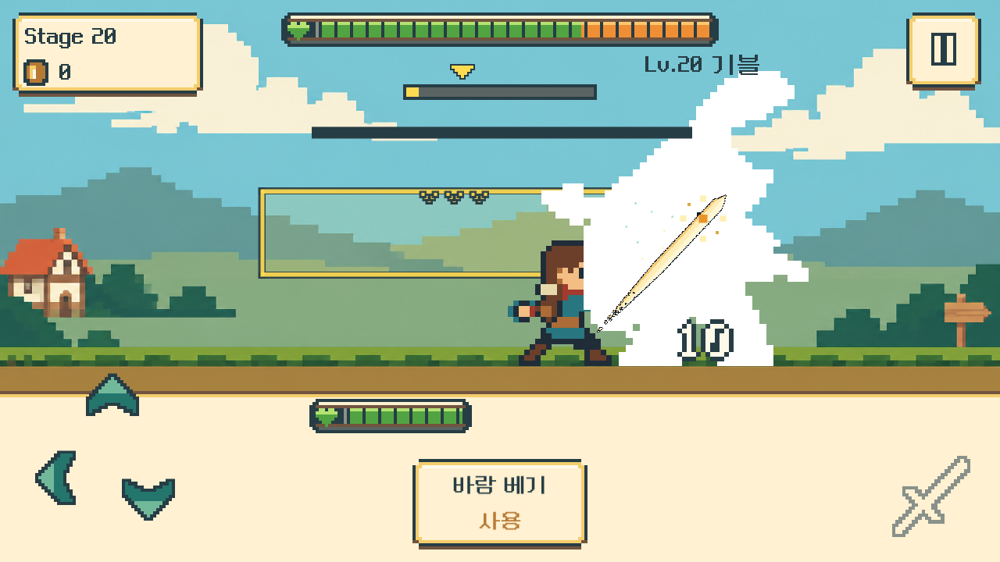
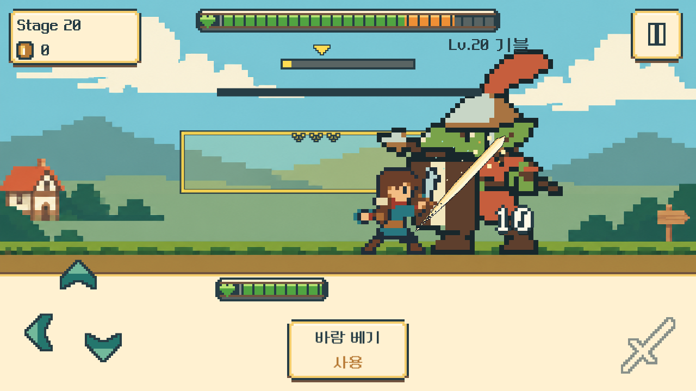
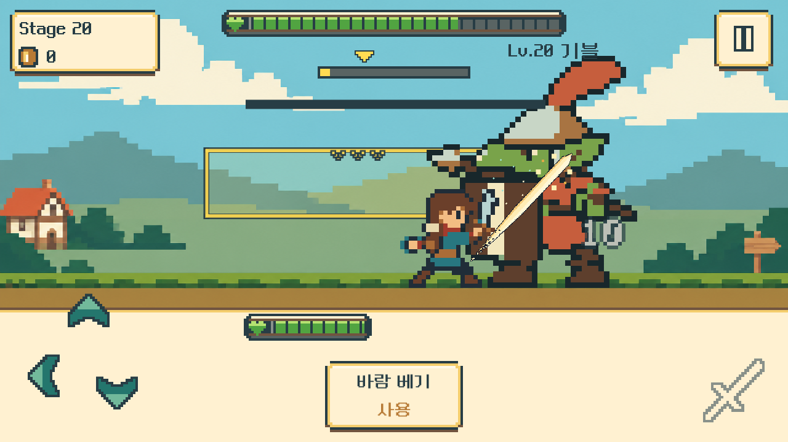

기존 강화 흐름
상단 탭줄과 행별 즉시 + 버튼·10칸 표시를 숨깁니다. 회복력은 다섯 번째 선택 행으로 남습니다. 뒤로가기는 캐릭터 선택으로 돌아갑니다.
익숙한 여관 강화 배치를 되살리고,
작은 도트와 큰 피해 숫자를 또렷하게.
동료는 각자의 기술로 함께 성장합니다.



기존 승인 도트 아트를 재사용한 기획 페이지입니다. 이 페이지의 배치도·효과 예시는 새 실행판 캡처가 아닙니다.
01 · THE INN
v5 이전의 업그레이드 구성을 복원합니다. 좌측 다섯 스탯에서 하나를 선택하고, 우측의 +1 / 최대 견적을 확인한 뒤 하단 강화 버튼을 누릅니다. 동료 진입은 우측 상단에 둡니다.

상단 탭줄과 행별 즉시 + 버튼·10칸 표시를 숨깁니다. 회복력은 다섯 번째 선택 행으로 남습니다. 뒤로가기는 캐릭터 선택으로 돌아갑니다.
동료 화면에서는 현재 편성, 스크롤 목록, 선택 동료의 전용 기술과 성장 견적을 보여 줍니다. 동료 화면의 뒤로가기는 업그레이드 화면으로 돌아갑니다.
현재→다음 수치, 비용, 소지 골드를 표시합니다. 부족하면 교환 확인으로 연결합니다. 최대 레벨·보스 해금 조건·이미 예약한 서비스는 상태에 맞게 표시합니다.
1280 기준 최소96×96,640 기준 최소48×48 터치 영역. 동료 목록은 스크롤하며 Safe Area는 기존 SafeRoot를 따릅니다. 여관 UI 단일 근거
02 · READABLE PIXELS
HP바는 네모 외곽과 선명한 잔량 대비를 유지합니다. 피해 숫자는 일반 타격부터 크게, 치명타는 한 단계 더 크게 표시합니다.

단일 실제 피해가 피격자 최대 HP의 1/3 이상일 때만 작동합니다. 초록색은 즉시 감소하고, 주황색 잔상은 0.12초 유지 후 0.55초 동안 일정한 속도로 따라옵니다.
HP 300 / 300
기획용 동작 예시이며 버튼을 누르면 HP 300에서 다시 시작합니다. 게임에서는 보호막 흡수 후 실제 피해를 기준으로 개별 타격마다 판정합니다. 작은 여러 타격은 합산하지 않습니다. 회복·다음 적 전환 때 초기화하고 일시정지 중에는 멈춥니다.
03 · INDEPENDENT SKILL
스킬을 누르면20초 쿨타임이 시작되고, 독립된200ms 뒤에 스킬 판정이 한 번 발생합니다. 진행 중인 평타의 준비·타격·복귀와 회피·쳐내기 상태를 덮어쓰지 않습니다.
흐름도는 동시 진행 관계를 설명합니다. 평타 길이는 현재 공격속도 규칙을 유지합니다.
미엘의 별빛 벼락은 하늘에서 적에게 내려치는 보라·크림 벼락으로 보여 줍니다. 벼락은 HUD 아래의 상공에서 시작해 적의 현재 몸 위치에 닿습니다. 스킬의 기절 누적은 실제 수치이며, 누적100을 소비한 기절은 다음 일반 플레이어 공격으로 발동합니다.
04 · EACH COMPANION, ONE SKILL
매 지원 공격을 준비할 때 전용 스킬 발동을 한 번 결정합니다. 발동하면 그 차례의 기본 공격을 스킬로 대체합니다. 토리의 화살이 두 발 보여도 실제 피해 판정은 한 번입니다.
| 동료 | 전용 스킬 | 동료 기본타격 대비 | 추가 효과 | 기본 주기 |
|---|
발동률12% →13% · 공격 주기가 짧아집니다.
| 동료 | 발동률 현재→다음 | 주기 현재→다음 | 기술 배율 |
|---|
수치 기획 확인용입니다. 골드·저장·게임 실행에 연결되지 않습니다. 게임 화면은 현재 편성으로 계산한 실제 견적을 표시합니다.
| 강화 효과 | Lv.1 | Lv.10 | Lv.20 | Lv.30 |
|---|---|---|---|---|
| 전용 스킬 발동률 | 12% | 21% | 31% | 41% |
| 기본 주기 대비 | 100% | 91% | 81% | 71% |
| 토리·모모 실제 주기 | 6.00초 | 5.46초 | 4.86초 | 4.26초 |
레벨마다 발동률+1%p, 기본 주기 대비1%씩 감소합니다. 기존 동료 피해 성장과11·21 돌파도 유지합니다. 발동률 상한45%, 주기 하한70%는 현재 Lv.30에서 닿지 않는 보호 한도입니다.
선택 동료의 전용 기술, 발동률, 주기와 기대 DPS를 비교합니다. 기대 DPS는 더 자주 때리고 기술이 발동하는 효과까지 포함한 평균 공격량입니다.
편성 전체 기대 DPS는 플레이어 기본 공격력의24%/초 이내입니다. 고정 편성을 강화하면 전체와 해당 동료의 기대 DPS가 내려가지 않으며, 상한에서는 정체될 수 있습니다.
공격이 빨라지고 기술 비중이 커지면, 상한을 맞추는 과정에서 한 번의 기본타격 수치나 강화하지 않은 다른 동료의 몫은 낮아질 수 있습니다. 그래서 모든 한 방이 커진다고 안내하지 않고 기대 DPS·확률·주기를 함께 보여 줍니다.
05 · SKILL EFFECTS
미엘의 굵은 보라 벼락과 리나의 짧은 청색 번개를 구분합니다. 근접 동료는 무기가 닿는 지면을, 원거리 동료는 투사체가 닿는 순간을 강조합니다.
Unity 적용 · 실제 화면 검토 완료
| 사용자 | 시각 언어 | 언제 종료 |
|---|
실제 기절 중에만 적 얼굴 주변에 큰 별 3개가 돌고, 기절 종료나 적 사망 즉시 사라집니다. 다렌의 보호막은 실제 잔량·남은 시간에 따라 유지되며, 모모 회복은 실제 회복량이 있을 때만 표시됩니다.
4개의 ParticleSystem과 투명 Point RenderTexture로 네모 입자를 합성합니다. 최대 376입자 예산이며, 실기기 성능 측정은 별도 검증 범위입니다. 효과는 공격·회피 동작이나 게임 수치를 바꾸지 않습니다. 상단 HUD 116단위와 조작 버튼을 비우고, 대화·정지·사망 상태는 실제 전투 시계를 따릅니다. 효과 단일 근거


실제 Windows 관측판 원본입니다. 고레벨·보유 동료 등 검증용 상태를 사용한 화면이며, 기존 범위의 정산·저장 복원 검증도 완료했습니다.



Windows 1280×720 실제 원본. 검증용 보스 HP 30에 10 피해(정확히1/3)를 가한 화면이며 실제 밸런스 수치는 아닙니다. 초록 HP는 계속2/3, 주황 잔상은100%→84.4%→66.7%입니다.
06 · IMPLEMENTATION & REVIEW
기존 동료·스킬·여관 변경은1280/640 관측·재실행으로, 추가 HP 잔상은 두 해상도의 플레이어·일반 적·보스 실제 피해로 확인했습니다. 관측판은 합성 입력과 검증용 저장을 사용했습니다. 일반판은 패키지 무결성 확인이며 별도 전체 플레이 인증은 아닙니다.
OS 실입력·모바일 실기기·직접 청음·정상 속도 성능 측정은 미실시입니다. 현재 플레이 범위는1~20입니다.
기존v5 기획·QA 근거는 보존합니다. 새 효과는 전투 수치를 별도로 계산하지 않고 확정된 스킬/접촉/회복 사건을 보여 줍니다.